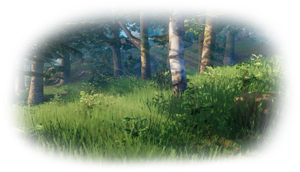
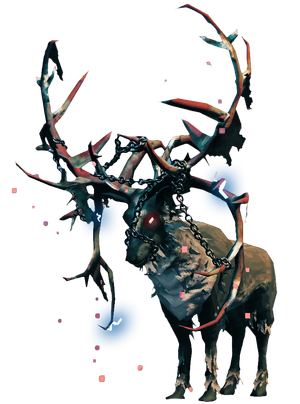
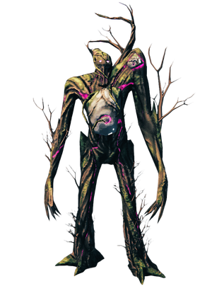
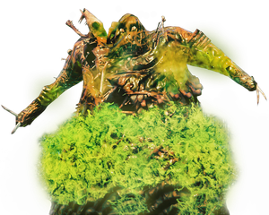
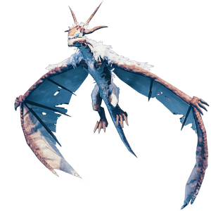
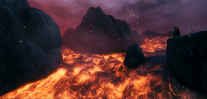
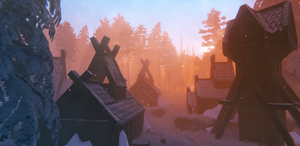

流程攻略
本地离线版支持中英文站内搜索。带 ↗ 的链接需联网；中文采用用户词表，各页来源版本见页脚。
本页按击败首领及可用资源介绍新玩家推进流程。不清楚如何游玩，参阅入门玩法指南。
提示：无需急着通关，慢慢探索享受冒险可能更有收获。许多玩家在两位首领之间花40至50小时战斗、探索，再继续推进。享受旅程！
青青草原


最初仅带碎布上衣，站在献祭石阵中央。新朋友福金会逐步指引，应听取建议。
- 收集资源和发展基地前，先沿海岸跑一圈了解陆地轮廓很有用。尚未成长，此时死亡等级损失很小，也能更好选择首个营地。途中可采浆果和蘑菇食用。
- 拾树枝或拳击小树获取木材。
- 拾地面小石获取石头。
- 用木材和石头制作石斧，防御灰宝宝及鬓猪，并加快砍树取木。此阶段倒下树木比青青草原其他事物更危险。靠近其他生态区边缘要谨慎。
- 探索时可用地图标记特殊地点并命名，以便返回。青青草原若遇二星野猪，极罕见生成，圈住并保留，待稍后驯服繁殖，可能是更好的长期投资。
继续探索，选好首个家园。不必过于依恋，之后可能多次搬家；当然也可保留原基地持续扩建，仅在别处建小型临时前哨。
- 此时无需特别易守，但最好靠海，便于取得燧石。
- 探索时采覆盆子和蘑菇，经常食用可略提高生命及耐力上限，并持续恢复。只要不破坏浆果丛，足够时间后会重新生成。
- 制作工具锤，用它制作工作台。工作台制作或修理前需遮蔽，至少周围有墙、上方有顶。最简方式是在后方放两面2x2墙，两侧各一面，共4面，再上方放两片屋顶。放置建筑部件无需工作台遮蔽。
- 修理物品和建筑不耗资源。耐久归零仅导致修复前无法使用或装备，无其他惩罚。点击工作台界面锤子按钮，每次修理背包中一件符合条件物品。
- 建基本住处，工作台和床铺需遮蔽才能完全使用。
- 床旁需燃木点着的营火才能睡觉。篝火不能放木地板上，需在户外，或室内上方有排烟空间，否则烟持续伤害玩家。雨或排烟不足会灭火，建屋顶可雨天保持燃烧。
- 在篝火上建烹饪台，烤鹿和野猪肉，提高生命和恢复。食物分耐力型黄叉、平衡型银叉、生命型红叉，按任务搭配能提高生存机会。
夜间可以睡觉，最初几晚尤其有用，因为夜间怪物更多。


为首领战做准备：
- 海滩拾燧石，适合制作燧石矛、刀、斧及工作台升级。
- 猎鬓猪获取肉和皮革碎片。
- 若打算远程挑战首领，制作粗弓及木箭或燃烧的箭。箭需羽毛，射鸟获取，砍树也偶尔掉落。
- 近战可制作盾配主手武器。
- 制作劈柴墩将武器升至等级2，再制皮革架进一步升级。
- 用弓猎鹿，投矛也可，但射程短更难。初期技能下，近战杀鹿极难。
- 用鹿皮制作皮甲。
- 寻找有蜂房的废弃房屋，用弓或投矛破坏。近战会被蜂施毒，也可建工作台、拆除所附墙壁。蜂巢掉落蜂后，可建自家蜂房，持续产蜂蜜，是首领战不错耐力食物。
之后挑战第一首领，战术见赤血灵鹿。新一天开始便开战，能减少拖至夜晚、显著增难的可能。
黑暗林山

从赤血灵鹿收集鹿角后，可制鹿角镐开采矿石和石头。先将战利品挂献祭石，放在背包并按互动键。按福金指引获得赤血灵鹿之力，使奔跑和跳跃耐力消耗降低60%。
原矿本身无用，还需准备，才能冶炼进入青铜时代：
- 前往黑暗林山寻找诡秘墓穴。
- 目标是找焰灵之核，用于建冶炼炉和木炭窑。可能需探索多座墓穴，每座冶炼炉和炭窑都需五核。
- 探索昏暗地下时，火把可副手照明，同时主手拿单手武器。先装备火把，再装备武器即可。火把耐久低，不应作武器。
- 骷髅怪抗穿刺，因此寻找焰灵之核时更适合棍棒或斧。
注意：：在黑暗林山生物群系可找蓟草，中期食物大量需要，收集储存备用。


建好冶炼炉和木炭窑后，尽量加工铜和锡。铜位于黑暗林山大矿床，锡类似燧石分布水边。在熔炉用1锡及2铜合成一锭青铜。矿石和金属锭无法传送。
- 优先青铜斧，可回青青草原从桦树和橡树获取细木。
- 细木解锁更好家具、细木弓和传送门等配方。
- 维护良好的传送网络省很多时间，但需要此阶段无法刷取的珍贵焰灵之核。
- 维京船船和板车帮助运输金属，黑暗林山距基地远时，应优先制作。
- 黑暗林山松树的圆木，允许建更高、更大建筑。
- 熔炉制武器护甲也仅能熔炉修理，留意耐久，出门前修好。
- 青铜时代可选巨魔 护甲或青铜护甲。巨魔护甲防御低、不减速，可工作台修理；青铜防高但减速。
- 建铸铁锅可将生食材做成更好的食物。
- 建好烹饪锅后，你在之后的游戏中很可能都会烹制并食用锅中加工的餐食，而不再食用采集的生食或用烹饪台烤制的食物。
- 在蜜酒壶处制作的蜜酒主料可用发酵桶发酵。蜜酒本质上是英灵神殿中的药水，可提供增益和恢复效果。应优先随身携带几份蜜酒，如小份治疗蜜酒或美味蜜酒，以应对危急情况。
- 青铜箭通常不值得制作。提升弓技能并升级细木弓后，你往往能用木箭、燧石箭或火箭的背刺伤害，一击击杀大多数体型较小的黑暗林山怪物。这三种箭足以用到后期箭矢出现，而且十分划算。
- 此时应已遇胡萝卜种子，用耕地耙种植获取胡萝卜。
- 你可以在黑暗林山的某处找到霍尔德，他是英灵神殿商人之一。找到后，他的位置便不会改变，也是为数不多能花费钱币和出售贵重物品的地方。他出售的梅金吉奧德腰带是游戏中仅有的两种可增加负重上限的物品之一（增加 50%！）。
装备准备满意，并升级部分工具乃至护甲后，就能挑战古树长老，战术见古树长老。
幽暗沼泽

击败古树长老获得沼泽钥匙，可进入泥泞沼泽 生态区域的地下圣堂。沉没墓穴是废铁首个主要来源，准备进入铁器时代。
重要：沼泽始终下雨，因此会一直附加潮湿效果。任何时候都应优先管理耐力；除非必须奔跑，否则不妨步行。没有休息好了效果时千万不要进入沼泽。花时间升级住所，尽可能延长休息增益的持续时间。此阶段达到 18 分钟的休憩应该并不困难。


沼泽新敌人足以杀死好护甲玩家，优质食物提供耐力和生命非常重要。此阶段应制作抗毒蜜酒应对软泥怪、大型软泥怪和蚂蟥。有树根面罩后，无需抗毒蜜酒。
- 废铁也无法传送。铁器时代武器和护甲需要大量铁。
- 上古之树产出古树皮，用于部分武器、护甲及维京长船。
- 单手铁锤是对付邪骨恶灵及随从的最佳铁器时代武器，因为它抗当时几乎所有其他可用伤害。铁钉头锤对沼泽几乎所有敌人，包括软泥怪、污泥怪和尸鬼，都非常有效。
- 较少生成的邪煞之树掉落邪煞之根，可制提高弓伤害的树根套装。憎恶还掉树脓，否则从树脓囊砍下很麻烦。
- 护甲也降低毒伤害，这一点并不直观。
- 鬼魅仅在沼泽夜间生成，可刷锁链，是高级武器、护甲和制作站升级必需材料。
- 焰灵在沼泽火焰喷口附近生成，现在较容易刷焰灵之核，建更多冶炼炉及传送门。
- 铁还用于建切石机，解锁石建筑和城堡。铁固木桩允许比圆木更高、更大建筑。
- 沼泽雨不停、敌人强、地势低，又缺大量木石，通常不适合建基地。
- 树屋是沼泽中的不错选择，因为这里的大树无法被摧毁，可依附其建造。建在高处的树屋能保护传送门和制作设施，避免被下方的邪煞之树和尸鬼破坏。
- 沼泽偶尔长芜菁种子，收集种芜菁。少量蓟草也可找到，但黑暗林山来源更好。
准备满意，并升级部分工具乃至护甲后，就能挑战邪骨恶灵，战术见邪骨恶灵。
凛冽雪山

击败邪骨恶灵获得愿望骨，能探测雪山隐藏银矿。主要环境威胁是冻僵状态，每秒1伤害慢慢致死，除非饮抗霜蜜酒或穿狼毛披风、狼胸甲。首要目标是找最近大型高海拔凛冽雪山 生态区域，探矿采银。


雪山的狼和石魔等新敌人伤害更高，足以杀好护甲玩家。没有弓箭很难杀霜龙。优质食物提供耐力及生命非常重要。爬陡坡耗耐力大，途中耗尽极易摔死，尽量选择合适战场。
- 不想带抗寒蜜酒，可用银和狼皮制作狼毛披风或胸甲。
- 有银即可制尸鬼之牙。银器时代多数其他武器相比铁器时代仅小幅提升。
- 银仅铁镐或更好可采，银矿像其他矿石金属一样无法传送。
- 夜间雪山对未准备者尤其危险，生成频繁，包括有星级狼，即使持盾格挡仍能造成极高伤害。
- 大型高山可找冰霜洞穴，非推进必需，但内敌掉制作芬里套装的材料。这是唯一增加额速度的护甲，套装提高拳类能力。
- 雪山宝箱偶尔含洋葱种子。种洋葱种子避免后期配方所需洋葱耗尽。雪山无法长作物。
- 用银升级铸铁锅，即第二项大锅升级屠夫台，才能解锁雪山食物。
- 石魔或冰霜洞穴的水晶用于制水晶墙 1x1，可作为透明窗玻璃般的板材。
准备满意并升级工具护甲后，可挑战冰霜龙母，战术见冰霜龙母。
北境平原
杀龙母得少量巨龙之泪，解锁工匠台，可建加工平原原料、生产后期物品的设施。平原敌人是迄今最危险的，杀人蜂夺走无数生命。
平原可能很平静，也可能危险。夜间遍布游荡的丑地精队伍。
- 一张工匠台可建任意数量高炉、风车和石砌烤炉，可随处拆装，无材料损失。
- 黑金属是平原阶段金属，丑地精掉黑金属碎片，单独威胁不大。
- 地精村落是亚麻和大麦主要来源，仅平原可重种。亚麻用于装备，大麦用于食物。单只丑地精威胁不大，但村庄内包括狂战士和丑地精萨满的群体会迅速杀死玩家。
- 召唤亚格鲁斯需五个丑地精图腾，偶尔村庄可找，集齐可能要大量探索。
- 平原牦牛在平原小群出现，掉肉皮，伤害很高，可驯服骑乘。牦牛抗多数伤害，穿刺，即矛或弓最有效。
- 焦油坑是仅见于北境平原的独特地形。小心焦油怪，它们能迅速杀死毫无准备的冒险者。收集焦油可解锁外观装饰和家具升级，以及黑金宝箱——在获得灰烬之地之前容量最大的箱子。
- 杀人蜂持续烦扰，但熟悉攻击模式、掌握时机便容易解决。
- 由于亚麻和大麦只能在北境平原种植，建议在平原建造一处易于防守的基地来保护作物。
- 亚格鲁斯的导向符文石出了名地难找。探索北境平原时，留意巨石阵建筑附近及丑地精哨站内部的指引石。也可以直接寻找首领场地，其突出地面的石指可能更容易辨认。
准备充分后，即可面对亚格鲁斯。
迷雾之地
迷雾之地地形崎岖难战，浓雾难看敌人，保持警觉关键。主要敌对生物邪蛛探索者，少见邪蛛侦察兵，以及空中加尔和它生成的壁虱幼虫。
亚格鲁斯给予的裂魂可制冥火之泉，在任意生态区夜间或雨天吸引冥火，无需迷雾之地。精灵可制多种物品，尤其冥火之光，装实用格、跟随并驱散附近迷雾，以及迷雾火把，用于大片区域或探索驱雾。当地死亡会掉落精灵灯，取尸可能需新制一个。
到达后优先收新材料、侦察环境。
材料
- 细树需黑金属斧砍伐，产世界之树木，用于多项新配方。
- 野兔不敌对，掉野兔肉和鳞皮。
- 当地新资源需黑金属镐开采。
- 探索者掉甲壳，用于新护甲和弹药。
- 侦察兵还掉下颌骨，用于部分新武器。
- 加尔难杀，掉胆汁袋用于少量新配方。
- 壁虱掉血块，用于部分蜜酒和食物。
- 各处有巨人泡泡和法师帽菇，均用于新食物。法师帽菇多在高处，巨人泡泡多在低地，两者仅迷雾之地可耕种，因此可考虑当地建基地。
- 黑大理石，解锁矮人式建筑及新制作站。
侦察
留意以下建筑：
- 大型发光远古树根，可获取汁液。
- 远古护甲与上古之剑，可开采废铁，替代沼泽墓穴来源。
- 矮人 塔楼和采矿营地。矮人通常是友善的种族，只有你先攻击它们，或从其住所偷窃并激怒它们时，才会攻击你。
- 部分矮人建筑改由探索者占据。若为塔，检查地下室可能有地下城入口，详见下文。
- 巨人遗骸、肋骨和头骨，头骨尤其重要，内含后续精炼埃达之能的软组织。
虫巢矿洞
各处虫巢矿洞是获取新物品关键，提供建新设施所需黑暗之核的唯一来源。
矿区入口两类：山坡内带长黑色大理石楼梯，或被占矮人塔地下室。均由探索者群守卫。
矿区是迷宫，满探索者、侦察兵、邪蛛幼雏和壁虱。幼体掉关键食材皇家果冻。黑暗之核常在隐藏房间基座，墙上蓝色符文标记。
感染矿洞的箱子里也能找到钩子。找到一个即可制作钩绳，它是穿越陡峭崖壁的必备工具，在之后的生物群系中也很实用。
留意装封印破除者碎片的基座，最终需9个解锁蛊虫之后巢穴，务必保留。
最后可能找到指示首领位置的导向符文石。
至少5黑暗之核后，可建黑熔炉，制作多数迷雾之地新物品。
汁液
下一步获取汁液，将汁液提取器装在发光树根，等其装满。放采集器需附近工作台，材料为世界之树木、黑金属及矮人提取器。当地无黑金属，需从其他基地运来。
矮人提取器仅从矮人板条箱获取，位于有居民塔及挖掘场。破箱会激怒附近矮人，可利用敌人攻营地，清理已削弱居民后拿取；敌人替玩家破箱不激怒。像所有金属，提取器无法传送。
埃达之能
汁液用于建埃达之力提炼器，将汁液和软组织转为埃达精华，是核心制作材料。设备工作时频繁向四周射元素伤害火花，很危险，应远离其他建筑，或用黑色大理石、铁笼封住。
有精炼源质后，终于可建最后的古咒法台，制作魔法物品及封印破除者，后者是通往蛊虫之后的钥匙。
灰烬之地


灰烬之地包含迄今最大挑战。
世界南端火焰领域，越内陆地形越变化，中央遍熔岩，焦黑亡灵军队占多数。
流程攻略:
进入灰烬之地前，应准备：
- 灰烬长船，途中唯一不会被沸海烧毁的船。
- 迷雾之地装备，最好升级。
- 优质生命食物。
- 火焰抗性药剂。
- 生命恢复和耐力蜜酒。
- 建传送门的材料，方便进出灰烬之地。
- 建首个前哨的石头，非必需，但部分玩家偏好行动基地。
- 选择邪骨恶灵增益，以承受更多伤害。
如何进入灰烬之地并推进此生物群系的流程：
- 准备灰烬长船，向南航行。
- 水变红、看见石刺从水中伸出时，便已接近。
- 穿过石刺抵达陆地，准备应对类似蛟龙的骨骺蛟龙及飞行灰烬之鹫。
- 登陆先放传送门，之后可建前哨或探索。用石头建，木头会烧。
- 不久会找到称腐朽之穴的洞穴。
- 腐臭洞穴内可找摩根、熔岩之核、指向神秘地点的符文石及其他战利品。
- 熔岩之核可制石传送门，传送金属及其他原本不能传送物品，更容易进入焰金属时代、获取当地装备。
- 开始寻找焰金属（可在熔岩湖中找到柱状矿体），开采后运回基地加工，以制作灰烬之地级别的护甲/装备。注意：先不要升级任何焰金武器！你很快会以另一种方式强化它们，而这会覆盖基础升级。
- 站稳脚跟并获得一些焰金和熔融核心后，开始寻找灰烬城堡——这些巨大的黑曜石色建筑凭借绿色光柱，在灰烬之地的天际线上格外醒目。它们由灰烬战士、射手、术士和邪影弩炮重兵守卫，是获取古钟碎片、翡翠、血石和堇青石的主要来源。
- 古钟碎片是关键推进物品，需总计九片。每三片在黑熔炉合一古钟，集齐三钟即可在翡翠之焰祭坛召唤青焰龙王。
- 挑战青焰龙王前，务必使用黑熔炉冷却器、台钳和宝石切割器等新扩展设施将黑熔炉完全升级，许多高阶灰烬之地武器和护甲都需要这些设施。
- 从灰烬城堡获得的血石、堇青石和翡翠可进一步强化焰金武器。每种武器都有三个变体，分别对应一种宝石，可在黑熔炉处制作。对法师而言，这些宝石可用于制作三种新法杖：雷霆之杖、巨魔之杖和野生之杖。
- 准备好后带古钟，前往符文石标出的翡翠之焰祭坛，位于灰烬之地深处。放三钟，召唤焦黑之王青焰龙王。
- 青焰龙王是强大的对手，对火焰和精神伤害具有抗性，并能发动伤害极高的范围火焰攻击。尽量携带冰霜或钝击武器，在其爆发攻击阶段保持足够距离。使用邪骨恶灵的遗弃者之力增强承伤能力，并始终保持抗火蜜酒效果。更多技巧见首领攻略。
- 击败青焰龙王后，你会获得青焰龙王战利品、青焰龙王的放逐之力（提高肾上腺素获取量和火焰抗性）以及余烬肋骨。后者用于建造永恒火堆，是继续探索极北之境所必需的设施。
极北之地


准备
生态区域阶段
- 岸边击杀海豹获海豹毛皮，制作余烬炸药。
- 击败巨魔长老，用余烬炸药炸遗骸获石化组织，在高炉冶炼成血金。
- 找到一个 废弃村落.
- 用冰霜之核在岸边建寒冰窑，从冰层采冰霜供给寒冰窑，获取液态冰霜，制作时液态冰霜按5的倍数使用。
- 建造 冰霜铸造所。如果只获得10个冰霜之核，而不是20个，就需要在铸造所和窑之间交替使用。
- 铸造所用于制作，可建当地与窑交换使用，或建主基地，即冶炼储存血金和模具之处。
- 使用获得的模具和血金制作诺德装备。
- 先在黑熔炉用模具、血金及附加材料制铸坯。
- 再于冰霜铸造所用5液态冰霜硬化铸坯，取得成品。
- 制隐秘钥匙进入墨尔克哈拉，地下城庞大，强烈建议钩绳方便移动。钥匙入场时消耗。
- 进入墨尔克哈拉后，前往底层并摧毁 邪恶之冰。 这将触发一个 巨人侵略.
- 地下城敌人掉更多模具，尤其当地护甲套装，也掉纪念用炭。
- 地图找入侵，前往破中央恶意之冰获邪恶之血。共重复3次，获取3恶意之血。
- 找纪念场地，用3纪念煤炭召堕落战士，击败获冰火或雷血精华，用于附魔诺德武器，类似焰金属武器镶宝石。当地导向符文石指向阿萨神族通道。
- 找到阿萨神族通道，需3恶意之血进入，对战最终首领凌冽·芬布尔使者。
接下来做什么？
为自己成功通关而庆祝。
随时可以转而建漂亮建筑，或照顾大群野猪。沙盒游戏没有正确或错误玩法。
| 攻略 | |
|---|---|
| 玩家 | |
| 战斗 | |
| 生成 | |
| 建材 | |
| 界面 | |
| 世界 | |
| 杂项 | |
| 开发 | |
This page sets out a new player's progression, as determined by bosses killed and resources available. Check the How to play guide if you are confused as how to play.
Tip: There is no need to rush through the game. Taking time to explore and enjoy the adventure can be more rewarding. Many players spend 40 to 50 hours between bosses, fighting and exploring biomes before progressing. Savor the journey!
Meadows
You start out with just your Rag Tunic in the middle of the Sacrificial Stones. Your new friend Hugin will be there to guide you every step of the way. You should take his advice.
- Running the coastline to get an outline of the land is helpful before gathering and developing a base. If you die, the level loss is very minimal as you have not developed at all. This will give you a better idea of where you will want to build your first camp. You can gather berries and mushrooms to eat while running.
- Get Wood by picking up branches or punching small trees.
- Get Stone by picking small rocks off the ground.
- Craft a Stone Axe from wood and stone. Use it to defend against Greylings and Boars, and to chop down trees to get wood faster. Falling trees are more dangerous at this stage than anything else in the Meadows. Be wary when near the border of other biomes.
- As you explore, you can use the in-game map tools to mark points of interest and put a label for when you want to return. Also, in the course of exploring the Meadows, if you encounter a two-star Boar (an extremely rare spawn), it may be a more beneficial long-term investment to trap it and keep it alive for taming and breeding (once you've progressed further).
Explore more until you are content and you've decided on where you want your first home. Do not get too attached to your first home. You are likely to move several times - even though it is possible to stay with your original base, keep expanding it and only build additional small temporary outposts elsewhere.
- It does not have to be particularly defensible at this time, but close to a coast is preferable for access to flint.
- As you explore, pick Raspberries and Mushrooms. You can eat them regularly to get a small bonus to maximum HP/stamina and healing over time. They will respawn after sufficient time, so long as the berry bushes are not destroyed.
- Craft a Hammer. Use it to craft a Workbench. Before you can use your workbench to craft or repair items, it needs to be "covered," meaning at a minimum there are some walls around it and a roof overhead. The simplest way to do this is to build two 2x2 walls behind the workbench, one on either side (total: 4 walls), and two roof pieces overhead. The workbench does not need to be covered in order to place building pieces.
- Repairing items and buildings costs no resources. Item durability being reduced to zero does not have any negative consequences other than being unable to use the item (including equip the item) until the durability is restored. To repair, click the hammer button on the workbench interface, and it will repair any eligible item in your inventory, one per click of the button.
- Build a basic shelter. Your workbench and Bed will need to be covered to work fully.
- A wood-fueled lit Campfire is needed near the bed to sleep. Note that campfires cannot be placed on wood floors. The fire needs to be outside or if inside needs space above it for the smoke to escape, otherwise smoke will damage you over time. Fires will be smothered by rain or insufficient smoke ventilation. To ensure that your fire stays lit even in rainy weather, build a roof over it.
- Build Cooking Stations over your campfire, roast the meat from the deer and Boars for more health and health regeneration. Notice that food is split into three types: stamina-focused (yellow fork), balanced (silver fork), and health-focused (red fork). Balancing the bonuses from food to fit the task at hand is will maximize your chances of survival.
You can sleep at night. This may be helpful for the first few nights, as more monsters spawn at night.
Prepare for the boss fight:
- Pick up Flint on the beach, this is best used to make a flint spear, knife, or axe, along with workbench upgrades.
- Hunt Boars for meat and Leather Scraps.
- If seeking to fight the first boss using ranged weapons, craft a Crude Bow and Wood Arrows or Fire Arrows. Arrows require feathers, which you get from shooting birds, and very occasionally when cutting down trees.
- For a melee combat, you can craft a shield to go with your main hand weapon.
- Craft a Chopping Block to upgrade your weapons to level 2, then a Tanning Rack to upgrade your equipment further.
- With the bow, hunt deer. Hunting with a spear is also an option, but more difficult because of the shorter throw range. At beginning skill levels, it is extremely difficult to try killing a deer using melee attacks.
- With the deer hides, craft Leather armor.
- Find some abandoned houses with Beehives in them. Destroy these with the bow or thrown spear. If you hit them in melee range, the bees will poison you. You can also build a workbench and destroy the walls the beehive is attached to. Beehives will drop a Queen Bee. This lets you build your own beehives, which generate Honey over time, a decent stamina food for the boss fight.
Then it is time for the first boss fight. See Eikthyr for tactics. Beginning the boss fight at the start of a new day will minimize the chances of the fight carrying over to the nighttime, where the fight will be significantly more difficult.
Black Forest
After collecting antler pieces from Eikthyr, you can now craft the Antler Pickaxe to mine ore and stone. First, place the Eikthyr trophy on the Sacrificial Stone (have it in your inventory and press the interact key). Follow Hugin's instructions to receive the Forsaken Power of Eikthyr which reduces your running and jumping stamina use by 60%.
Raw ore is no good by itself. Further preparations are needed to begin smelting and enter the Bronze Age:
- Head to the Black Forest and look for Burial Chambers.
- Your objective is to find Surtling Cores which are used in the construction of the Smelter and the Charcoal Kiln. You may need to search multiple chambers to collect enough of them - each smelter and kiln requires five cores.
- When exploring the dark underground chambers, a Torch may serve as a light source, held in the off-hand while you hold another one-handed weapon. To do this, equip the torch first, then equip the weapon, and your character will now hold both a torch and weapon. The torch itself has low durability and should not be used as a weapon.
- Skeletons resist pierce damage, so the preferred weapon when exploring for surtling cores is a club or axe.
Note: In the Black Forest biome you will find Thistle. These are used in large quantities for crafting mid-tier food. Collect them and store them for later.
Once you have set up the Smelter and the Charcoal Kiln you should aim to process as much copper and tin as you can find. Copper can be found in large deposits in the Black Forest. Tin can be found near water in the Black Forest, similar to flint. These are combined at a Forge, using 1 tin and 2 copper to make a single ingot of Bronze. Ore and Metal Bars cannot be teleported.
- Prioritize the Bronze Axe, which allows you to collect Finewood from Birch and Oak trees back in the Meadows.
- Finewood unlocks more crafting recipes, including better furniture, the Finewood Bow, and portals.
- A thoughtfully maintained portal network will save you a lot of time. However, portals require precious surtling cores which you cannot farm at this stage of the game.
- The Karve boat and Cart can help with moving the metals, so consider making this a priority if the Black Forest is a long distance from your base.
- Corewood from Pines found in the Black Forest allow you to build taller, bigger buildings than before.
- Weapons and armor crafted at the Forge also can only be repaired at the Forge. Watch the durability of your items and repair before leaving your base.
- The armor options in the Bronze Age are Troll armor and Bronze armor. Troll armor has lower defense, but does not reduce movement speed, and can also be repaired at the workbench. Bronze armor has high defense but makes you move slower.
- Building a Cauldron lets you turn raw food and ingredients into much better food.
- Once you build a cauldron, you will likely be cooking and eating processed meals from it for the rest of the game instead of raw food you foraged or cooked with the Cooking Station.
- Mead bases crafted at the Mead Ketill can be fermented using the Fermenter. Meads are essentially potions in Valheim, providing buffs and regeneration. Prioritize carrying a few meads, such as Minor Healing Mead or Tasty Mead, for dire situations.
- Bronzehead Arrows are generally not worth making. You will often find that after leveling your bow skills and your Finewood bow, you one shot most smaller Black Forest Mobs with a backstab from a wood, flint, or fire arrow. These three will be more than sufficient and very cost effective until late game arrows.
- At some point you should have come across Carrot Seeds. Plant these with a Cultivator for Carrots.
- Somewhere in the Black Forest you can find Haldor, one of Valheim's merchants. He does not move once found, and is one of the only places to spend Coins and sell valuables. The Megingjord that he sells is one of only two items in the game which increases carrying weight (by 50%!).
Once you feel comfortable with your setup and have taken the time to upgrade some of your tools and potentially the armor, you will be ready to fight the Elder. See The Elder for tactics.
Swamp
You will now have the Swamp Key after defeating The Elder, which grants you access to Sunken Crypts in the swamp biome. Sunken crypts are the first major source of Scrap Iron. Prepare to enter the Iron Age.
IMPORTANT: It is always raining in the swamps and the Wet Effect will always be applied as a result. Stamina management is a top priority at all times. Do not be afraid to walk unless you need to run. You do NOT want to be in the swamp without the Rested Effect. Take the time to upgrade your home to maximize your rest timer. 18 minutes of rest at this point should not be hard to achieve.
- Some Swamp biomes will contain very few Sunken Crypts, while others will contain many. Some crypts will contain a lot of Muddy Scrap Piles, while others will not. Your mileage may vary so be aware that you will most likely have to move from swamp to swamp to collect enough iron if you are playing with a team.
The Swamp introduces new enemies that do enough damage to kill well armored players. When moving through the swamp, it is important to have good quality food to give you enough stamina and health to deal with the enemies. You will also want to invest time into making Poison Resistance Mead at this stage to help with Blobs, Oozers, and Leeches. Once you have a Root Mask, the Poison Resistance Mead will not be needed.
- Scrap iron also cannot be teleported. Iron itself is necessary in fairly large quantities for Iron Age weapons and armor.
- Ancient trees yield Ancient Bark, which is used for certain weapons, armor, and the Longship.
- The one-handed Iron Mace is the best Iron Age weapon to fight Bonemass and its minions, as it is resistant or very resistant to all other damage types likely available at this time. The Iron mace is highly effective against nearly all enemies in the swamp, including blobs, Oozers, and Draugr.
- The uncommonly-spawning Abominations drop Roots to craft the Root Set, which boosts bow damage. Abominations also drop Guck, which is otherwise annoying to chop off of Gucksacks.
- Poison damage is also reduced by armor, which is not intuitive.
- Wraiths only spawn at night in the swamp, and may be farmed for their Chains, a necessary material for higher-tier weapons, armor, and crafting station upgrades.
- Surtlings spawn around Fire geysers in the swamps, and you can now more readily farm Surtling cores to build more smelters and portals.
- Iron is also used to build a Stonecutter, which allows you to now build stone buildings and castles. Wood Iron Poles allow you to build even bigger and taller than Corewood.
- The swamp itself is generally a poor location to build a base, between the constant rain, aggressive enemies, low elevation, and lack of abundant wood or stone to construct buildings.
- Treehouses can be a good option in the swamp, as the large trees are indestructible and can be built off of. A high elevation treehouse keeps your portal and crafting stations safe from the destructive power of the Abominations and Draugr below.
- Turnip Seeds grow occasionally in the swamps. Collect these to grow Turnips. Thistles can be found in small quantities in the swamp, but the Black Forest is a much better source.
Once you feel comfortable with your setup and have taken the time to upgrade some of your tools and potentially your armor, you will be ready to fight Bonemass. See Bonemass for tactics.
Mountains
You will now have the Wishbone after defeating Bonemass, which allows you to find silver veins hidden in the mountain biomes. The key environmental hazard in the Mountain is the freezing status effect that will kill you slowly (1 dps) unless you quaff a Frost Resistance Mead or have equipped a Wolf Fur Cape or Wolf chest. The first objective after defeating Bonemass is to locate the nearest large, high-elevation Mountain biome to begin finding and mining silver.
The Mountain introduces new enemies that will do even more damage (Wolves and Stone Golems), more than enough to kill otherwise well armored players. Drakes will be very difficult to kill without a bow and arrows. When moving through the Mountain, it is important to have good quality food to give you enough stamina and health to deal with these enemies. Climbing steep mountain sides is a big stamina drain, and running out of stamina on the way up a mountainside is a surefire way to fall to your death. Pick your fight location accordingly when you can.
- If you do not want to carry frost resistance meads, you can collect silver and wolf pelts to make a wolf fur cape or chest.
- With silver, you will now be able to craft the Draugr Fang. Most of the other weapons in the Silver Age are only fairly marginal upgrades over the Iron Age weapons.
- Silver can only be mined with an Iron Pickaxe or better. Silver ore cannot be teleported, like other ores and metals.
- Nighttime in the Mountain is especially dangerous for the unprepared viking. Enemies will spawn at fairly high rates, including starred Wolves who can deal extreme damage, even through a shield block.
- In large, high-elevation mountains, Frost Caves can be found. These are not mandatory for progression, but the enemies inside will drop items necessary to craft the Fenris Set, which is the only armor which increases movement speed and has a set bonus increasing proficiency with Fists.
- Chests in the Mountains will occasionally contain Onion Seeds. Grow Onion Seeds to ensure that you do not run out of Onions, which are used in endgame cooking recipes. Crops do not grow in the Mountains.
- Upgrading your Cauldron with silver (the second cauldron upgrade, the Butcher's Table) is necessary before unlocking recipes to cook Mountain-tier foods.
- Crystal drops from stone golems or from inside frost caves are used to craft Crystal Wall 1x1, which can be used as transparent "window" glass-like panes.
Once you feel comfortable with your setup and have taken the time to upgrade some of your tools and armor, you will be ready to fight Moder. See Moder for tactics.
Plains
After killing Moder you will receive a few Dragon Tears. This will give you access to the Artisan Table, which is necessary to make workstations that can produce endgame items, the raw materials for which can be found in the plains. The plains have some of the most dangerous mobs yet. The Deathsquito has claimed countless lives.
The plains can be very peaceful or very dangerous. At night, the plains are filled with roving bands of Fulings.
- One artisan table can be used to build as many Blast Furnace, Windmill, and Stone Oven as you want. It can be disassembled and reassembled anywhere without material penalties.
- Black Metal is the Plains-tier metal. Fulings drop Black Metal Scrap. Alone, they do not pose much of a threat.
- Fuling Villages are the main source of Flax and Barley, which only can be replanted and regrown in the plains. Flax is used for equipment, while Barley is used for food. While an individual Fuling does not pose much of a threat, the large groups of Fulings (including Berserkers and Fuling shamans) in villages can quickly kill you.
- Five Fuling totems are required to summon Yagluth. They can be occasionally found in fuling villages, and it may require a substantial amount of exploration to find five.
- Lox are found in small herds in the plains. They drop meat and pelts, but deal heavy damage. They can also be tamed and ridden. Lox resist most types of damage, and pierce (spears or bows) is the most effective way to deal with them.
- Tar pits are unique formations found only in the plains. Beware of the Growths, which can quickly kill an unprepared adventurer. Collecting Tar unlocks cosmetic and furniture upgrades, as well as the Black Metal Chest, the largest-capacity chest available until the Ashlands.
- Deathsquitos are a constant nuisance but can be easily dealt with proper timing and familiarity with their attack patterns.
- Because Flax and Barley can only be grown in the Plains, it is recommended to build a defensible base in the plains to protect your crops.
- Yagluth’s Vegvisir is infamously quite difficult to locate. While exploring the plains, check for the Vegvisir near Stonehenge structures and inside Fuling Outposts. Alternatively, it may be easier to search for the boss arena itself, which can be identified by its protruding stone fingers.
When adequately prepared, you can now face Yagluth.
Mistlands
The Mistlands terrain is erratic and difficult to fight on, and the dense mists make it difficult to see aggressors, so being vigilant is key. Seekers are the main hostile mob you will encounter here, though you will also rarely encounter Seeker soldiers, as well as the airborne Gjall and the Ticks that they spawn.
The Torn spirits that you received from Yagluth can be used to construct a Wisp Fountain, which attracts wisps in any biome (you do not need to build them in the Mistlands), during the night or in rainy weather. The wisps can be used to craft a few items, most notably the Wisplight, a utility slot item that follows you and disperses mist around itself, and Wisp torches to dispel the mist in larger areas or even during exploration. In the event of your death in the Mistlands, the wisplight will be dropped, and you may have to craft a new one to do a corpse run.
Once you arrive, your first priorities should be gathering new materials and scouting the environment.
Materials
- The thin trees in the area require a Black Metal Axe to cut down, and yield Yggdrasil Wood which is used in a number of new recipes.
- Hares are non-hostile creatures that drop Hare Meat and Scale Hide.
- The new resources in the Mistlands require a Black Metal Pickaxe to mine.
- Seekers drop Carapace which will be used in the new tier of armor and ammunition.
- Seeker soldiers also drop Mandible, used in some new weapons.
- Gjall are tough to kill, but drop Bilebag when slain, which are used in a couple of new crafts.
- The ticks drop Blood Clot which are used in some mead and food recipes.
- Jotun Puffs and Magecap can be found scattered around, both of which are used in new food recipes. Magecaps tend to spawn in the peaks, whereas Jotun puffs spawn mostly in lower areas. Both can be farmed and regrown only in the Mistlands, which means that you may want to consider building a base in the Mistlands as well.
- Black Marble which enables the construction of Dvergr-style structures and new work stations.
Scouting
Keep an eye out for the following structures:
- Large glowing Ancient Roots, from which Sap can be harvested.
- Ancient armor pieces and swords - these can be mined for Scrap Iron, providing an alternative source from Swamp crypts.
- Dvergr towers and mining camps - the Dvergr are a passive race normally, only attacking you if you attack them first, or if you anger them by stealing from their homes.
- Sometimes, Dvergr structures are inhabited by groups of Seekers instead - if they are towers, check the basement for a possible dungeon entrance (see below).
- Giant Remains, ribcages and skulls - the skulls are particularly important, because they contain Soft Tissue used later for Eitr refinement.
Infested Mines
The Infested Mines dotted around the Mistlands are key to accessing new items, as they are your only source of the Black cores needed to make the new workstations.
There are two types of entrances to infested mines - one which is set into a hillside with a long black marble stairwell, and the other is in the basement of overrun Dvergr towers. Both are guarded by groups of Seekers.
The mines themselves are labyrinthine dungeons full of Seekers, Seeker soldiers, Seeker broods and Ticks. The broods are useful for their Royal Jelly drops, which are a key food ingredient. The black cores are usually mounted on pedestals in hidden rooms, indicated by blue runic markings on the walls.
The Hook can also be found within chests in the infested mines. Finding one will allow you to craft the Grappling Hook, which is essential for traversing the sheer cliffs, and will be useful for later biomes.
Another thing to look out for are pedestals containing Sealbreaker fragments - you will need 9 of these to eventually unlock the lair of The Queen, so make sure to keep hold of them.
Finally, you may run into a Vegvisir indicating the location of The Queen.
Once you have at least 5 black cores, you can construct a Black Forge, where you can make most of the new Mistlands items.
Sap
The next step in Mistlands progression is Sap. This is obtained by attaching a Sap Extractor to the glowing tree roots scattered across the Mistlands and waiting for them to fill up. Sap extractors require a workbench nearby to place, and need three components: Yggdrasil wood, Black Metal and a Dvergr Extractor. Black metal is not available in the Mistlands, so it must be shipped in from other bases.
The Dvergr extractor can only be obtained from Dvergr Component Crates, which appear in inhabited Dvergr towers and mining camps. The catch is that breaking the crate angers the nearby Dvergr, so you may want to take advantage of nearby enemies attacking the camp to clear out the weakened occupants and claim the extractor. Alternatively, the Dvergr will not be angered if an enemy breaks the crate for you. Like all metals, the Dvergr extractor cannot be teleported.
Eitr
The sap can be used to construct the Eitr Refinery, a structure that converts sap and soft tissue into Refined Eitr, the core crafting component of Mistlands items. The refinery is actually dangerous while in operation, frequently firing off sparks of elemental damage in all directions, so you should keep it away from other structures or encase it in black marble or an iron cage when using it.
Armed with refined eitr, you can finally construct a Galdr Table, the last remaining crafting station, which is used to make Magic items, as well as the Sealbreaker - the key to reaching The Queen.
Ashlands
The Ashlands are home to the game's greatest challenges thus far.
A fiery realm at the south edge of the world, the terrain changes the more inland one travels, with central parts taken up by lava. The undead army of Charred make up most of the population.
Progression guide:
Before you enter the Ashlands, you want to have the following:
- Drakkar, the only boat that will not boil up on the way in.
- Mistlands gear, preferably upgraded.
- Good health food.
- Fire resistance potions.
- Healing and stamina meads.
- Materials to build a portal, to allow you to get in and out of the Ashlands easier.
- Stone to build a first outpost (not needed, but some players prefer to have a base of operation).
- Bonemass buff selected so you can tank more damage.
How to enter the Ashlands and start the biome progression:
- Get your Drakkar, and start sailing south.
- When the water turns red, and you see stone spikes coming up from the water, you know you are close.
- Navigate through the stone spikes and try to reach the land. Be prepared to get attacked by Serpent-like creatures called Bonemaws and by flying Voltures.
- When you reach land, place a portal there. From here on you can either start building an outpost (do it in stone since wood will catch fire) or start exploring.
- After a while, you will find caves. They are called Putrid Holes.
- Inside Putrid Holes you can find Morgen, Molten Cores and vegvisirs to mysterious locations (and other loot).
- With the Molten Cores you will be able to craft the stone portal that will allow you to teleport metal and other non-teleportable stuff, which makes it way easier to start the Flametal age and get Ashlands gear.
- Start looking for Flametal (you can find them as pillars in lava lakes), which you will be able to mine and get home to base to then process and craft Ashlands tier armor/gear. Note: Do not upgrade any Flametal weapons yet! You will be improving them soon in a way that will overwrite any base upgrades.
- Once you have set up a foothold and secured some Flametal and Molten Cores, start scouting for Charred Fortresses — massive obsidian-black structures that dominate the Ashlands skyline with their green beacons of light. These are heavily guarded by Charred Warriors, Marksmen, Warlocks, and Skugg. These fortresses serve as your primary source of Bell Fragments, Jade, Bloodstone, and Iolite.
- Bell Fragments are a key progression item — you will need to collect nine of them in total. Every three fragments can be combined at a Black Forge to create a single Bell. Once you have all three Bells, you will be able to summon the Forsaken boss of the Ashlands, Fader, at the Emerald Flame altar.
- Before you challenge Fader, make sure to fully upgrade your Black Forge with its new attachments such as the Black Forge Cooler, Vice, and Gem Cutter, as many of the higher-tier Ashlands weapons and armor require these.
- Bloodstone, Iolite, and Jade gathered from the charred fortresses allow you to improve your Flametal weapons even further. Each weapon has three variants, one for each gem, that can be created at the black forge. For mages, these gems allow you to craft three new staves: Dundr, Trollstav, and the Staff of the Wild.
- When you are ready, gather your Bells and head towards the altar marked by the Vegvisir for Fader. The altar, located deep within the Ashlands, is called the Emerald Flame. Place your three Bells on the altar to summon Fader, the Charred King.
- Fader is a formidable opponent — resistant to fire and spirit damage, and capable of dealing massive Area of Effect flame attacks. Bring frost or blunt weapons if possible, and maintain a healthy distance during his explosive phases. Utilize Bonemass’s Forsaken power for extra tanking, and keep your Fire Resistance Meads active at all times. For more tips, see Boss strategies.
- Once you defeat Fader, you will obtain the Fader Trophy, Fader’s Forsaken power (which increases your adrenaline gain and fire resistance) and Kindled Ribs, used to build the Eternal Pyre, needed to progress in the Deep North.
Deep North
Preparation
- Before departing, build an Eternal Pyre and harvest Embers from it.
- Bring along the materials for a Stone Portal.
- It is not necessary to sail with the Drakkar, as there is no boiling sea or its equivalent surrounding the Deep North.
Biome progression
- Kill Seals on the shore to obtain Seal Pelts, and craft Ember Charges from them.
- Defeat a Gammeltroll. Blow up its remains using Ember Charges in order to obtain Petrified Tissue. Smelt it in a Blast Furnace to obtain Bloodgold.
- Find an Abandoned Village.
- Destroy barrels in the village to obtain Moulds for some Deep North-tier weapons.
- Find the entrance to the Winding Tunnels inside large houses in the village. Within, acquire more Moulds by destroying trash piles on the ground, and Frostcores (at least 10, ideally 20).
- Build a Frigid Kiln on the shore using the harvested Frostcores, mine Ice from Ice Sheets, and supply it to the Frigid Kiln to acquire Liquid Frost (multiples of 5 Liquid Frost are used for crafting).
- Build a Frost Foundry. If you only acquired 10 Frostcores instead of 20, you will need to swap between the foundry and kiln.
- The foundry is used for crafting, so you may choose to build it either in the Deep North for swapping with the kiln, or at your main base (wherever you're smelting and storing Bloodgold and Moulds).
- Craft Nord equipment using the acquired Moulds and Bloodgold.
- First, craft a Cast using the Mould, Bloodgold, and additional materials at a Black Forge.
- Then, harden the Cast at a Frost Foundry using 5 Liquid Frost to obtain the final item.
- Craft an Intricate Key to gain access into Mörkhalla. Note that the dungeon is massive, and a Grappling Hook is highly recommended to traverse it. The key is consumed on entry.
- Inside Mörkhalla, get to the bottom floor, and destroy the Malicious Ice. This will trigger a Jotun Invasion.
- Enemies inside the dungeon drop additional Moulds, particularly those for Deep North-tier armor sets. In addition, they drop Memorial Coal.
- Find the invasion on the map, travel there, and destroy the Malicious Ice in its center to obtain Malicious Blood. Repeat this a total of 3 times to obtain 3 Malicious Blood.
- Find a Memorial Site. Use 3 Memorial Coal to summon a Fallen Warrior, and fight it to obtain Frostfire or Thunderblood Essence. Use them to enchant your Nord weapons, akin to Flametal weapons and gemstones in the Ashlands. A Vegvisir at the site will point to the Aesir Passage.
- Find the Aesir Passage. 3 Malicious Blood is required to enter and fight the final boss, Kall Fimbulbringer.
What to do next?
Pat yourself on the back for beating the game.
At any point, you may decide that you would rather build a cool structure or tend a large herd of Boars. There is no "right" or "wrong" way to play this sandbox game.
| Guides | |
|---|---|
| Player | Player • Health • Stamina • Eitr • Adrenaline • Death • Forsaken power • Skills • Status effects • Movement speed • Magic • Fishing • Riding • Sleeping • Emotes |
| Combat | |
| Spawning | |
| Building | |
| UI | |
| World | |
| Misc | |
| Development | |